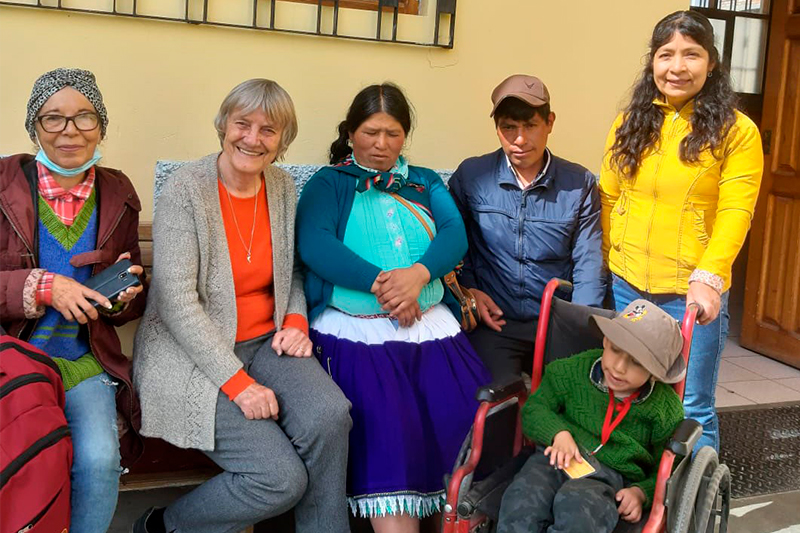

Sind Sie dabei?
Gemeinsam können wir viel erreichen – das ist unser Credo. Deshalb zählt für uns jeder Mensch und jeder Beitrag ist wichtig, egal ob klein oder groß. Machen Sie mit und stärken Sie die Gemeinschaft der Menschen von Santa Dorotea.
Für unser aktuelles Projekt der Erwachsenenbildung suchen wir noch finanzielle Unterstützung: Mit einem speziellen Ofen können die Teilnehmer*innen unserer Backworkshops in Zukunft selbst Brot herstellen, nicht nur für den Eigenbedarfs, sondern auch zum Verkauf. Ein weiterer Schritt auf dem Weg zu mehr Selbstwirksamkeit und Eigenständigkeit.
Setzen Sie ein Zeichen und unterstützen Sie uns mit Ihrer Spende!
Sparkasse Bielefeld:- IBAN DE 89480501610006564322
- BIC: SPBIDE3BXXX